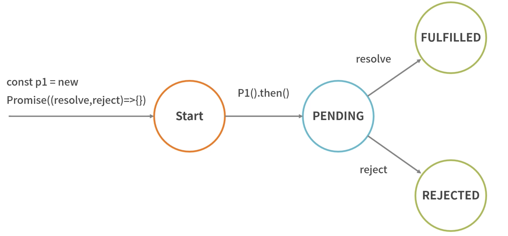

ES6 之前，社区就提出了 Promise 的方案，后随着ES6 将其加入进去，统一了方法，提供了原生的 Promise 对象。
问题1：
Promise 内部究竟有几种状态？问题2：
Promise 是怎么解决回调地狱问题的？Promise 的基本情况
简单来说，它就是一个容器，里面保存着某个未来才会结束的事件的结果
从语法上说，Promise是一个对象，从它可以获取异步操作的消息
function read(url) {
return new Promise((resolve, reject) => {
fs.readFile(url, 'utf8', (err, data) => {
if (err) reject(err);
resolve(data);
});
});
}
read(A).then(data => {
return read(B);
}).then(data => {
return read(C);
}).then(data => {g
return read(D);
}).catch(reason => {
console.log(reason);
});
- 待定(pending): 初始状态，既没有被完成，也没有被拒绝
- 已完成(fullfilled): 操作成功完成
- 已拒绝(rejected): 操作失败
待定状态的 Promise 对象执行的话，最后要么会通过一个值完成，要么会通过一个原因被拒绝
最后Promise.prototype.then 和Promise.prototype.catch 方法返回的是一个 Promise 所以它们可以继续被链式调用

深入理解，可学习”有限状态机”
Promise 如何解决回调地狱
回调地狱问题：
- 多层嵌套的问题
- 每种任务的处理结果存在两种可能性（成功或失败），那么需要在每种任务执行结束后分别处理这两种可能性
Promise 利用了三大技术手段来解决回调地狱： 回调函数延迟绑定、返回值穿透、错误冒泡
回调函数延迟绑定
let readFilePromise = (filename) => {
fs.readFile(filename, (err, data) => {
if (err) {
reject(err);
} else {
resolve(data);
}
})
}
readFilePromise('1.json').then(data => {
return readFilePromise('2.json');
})
返回值穿透
let x = readFilePromise('1.json').then(data => {
return readFilePromise('2.json') // 这是返回的Promise
});
x.then(/* 内部逻辑省略 */)
错误冒泡
readFilePromise('1.json').then(data => {
return readFilePromise('2.json');
}).then(data => {
return readFilePromise('3.json');
}).then(data => {g
return readFilePromise('4.json');
}).catch(err => {
// ...
});
Promise 的静态方法
从语法、参数以及方法的代码几个方面来分别介绍 all、allSettled、any、race 这四种方法
all 方法
- 语法：Promise.all(iterable)
- 参数：一个可迭代对象，如Array
- 描述：此方法对于汇总多个Promise的结果很有用，在ES6中可以将多个Promise.all异步请求并行操作
- 当所有结果成功返回时按照请求顺序返回成功
- 当其中有一个失败方法时，则进入失败方法
// 1.获取轮播数据列表
function getBannerList() {
return new Promise((resolve, reject) => {
setTimeout(function() {
resolve('轮播数据')
},300)
})
}
//2.获取店铺列表
function getStoreList() {
return new Promise((resolve, reject) => {
setTimeout(function() {
resolve('店铺数据')
},500)
})
}
//2.获取分类列表
function getCategoryList() {
return new Promise((resolve, reject) => {
setTimeout(function() {
resolve('分类数据')
},700)
})
}
function initLoad() {
Promise.all([getBannerList(), getStoreList(), getCategoryList()])
.then(res => {
console.log(res);
}).catch(err => {
console.log(err);
})
}
initLoad()
allSettled 方法
Promise.allSettled 的语法及参数跟 Promise.all 类似
- 参数：接受一个Promise的数组，返回一个新的Promise
当Promise.allSettled 全部处理完成后，我们可以拿到每个Promise的状态，而不管其是否处理成功
const resolved = Promise.resolve(2);
const rejected = Promise.reject(-1);
const allSettledPromise = Promise.allSettled([resolved, rejected]);
allSettledPromise.then(function (results) {
console.log(results);
})
// 返回结果：
// [
// {status: 'fulfilled', value:2}
// {status: 'rejected', value:-1}
// ]
any 方法
- 语法：Promise.any(iterable)
- 参数：iterable 可迭代的对象，例如Array
- 描述：any方法返回一个Promise，只要参数Promise实例有一个变成fulfilled状态，最后any返回的实例就会变成fulfilled状态，如果所有参数Promise实例都变成rejected状态，包装实例就会变成rejected状态
const resolved = Promise.resolve(2);
const rejected = Promise.reject(-2);
const allSettledPromise = Promise.any([resolved, rejected]);
allSettledPromise.then(function (results) {
console.log(results);
})
// 返回结果：
// 2
race 方法
- 语法：Promise.race(iterable)
- 参数：iterable 可迭代的对象，例如Array
- 描述：race方法返回一个Promise，只要参数的Promise之中有一个实例率先改变状态，则race方法的返回状态就跟着改变
// 请求某个图片资源
function requestImg() {
var p = new Promise(function(resolve,reject) {
var img = new Image();
img.onload = function() { resolve(img); }
img.src = 'http://www.baidu.com/img/result.png';
});
return p;
}
// 延时函数，用于给请求计时
function timeout() {
var p = new Promise(function(resolve,reject) {
setTimeout(function() { reject('图片超时'); },5000);
})
return p;
}
Promise.race[requestImg(), timeout()]
.then(function(results) {
console.log(results);
})
.catch(function(reason) {
console.log(reason);
})
总结
| Promise方法 | 简单总结 |
|---|---|
| all | 参数所有返回结果为成功才返回 |
| allSettled | 参数不论返回结果是否返回成功，都返回每个参数执行状态 |
| any | 参数中只要有一个成功，就返回该成功的执行结果 |
| race | 返回最先返回执行成功的参数的执行结果 |